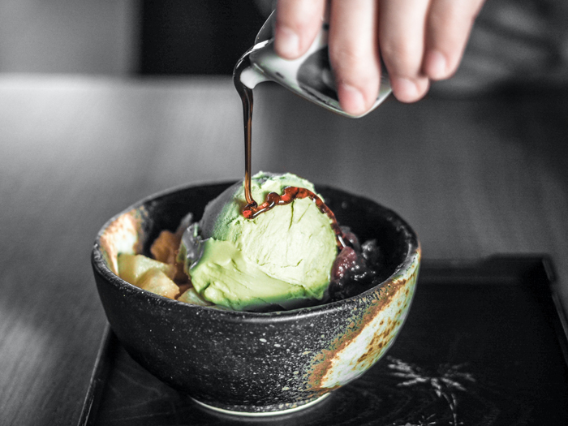
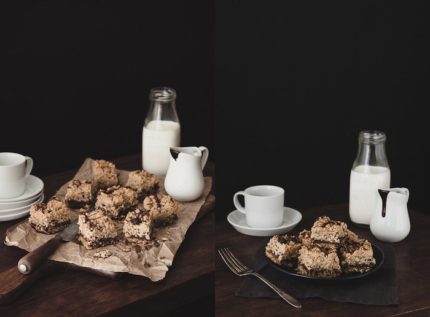
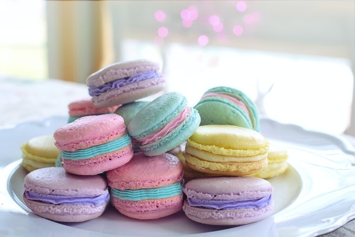
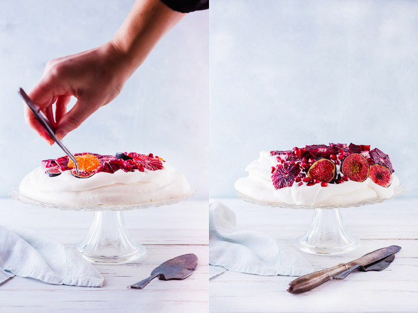
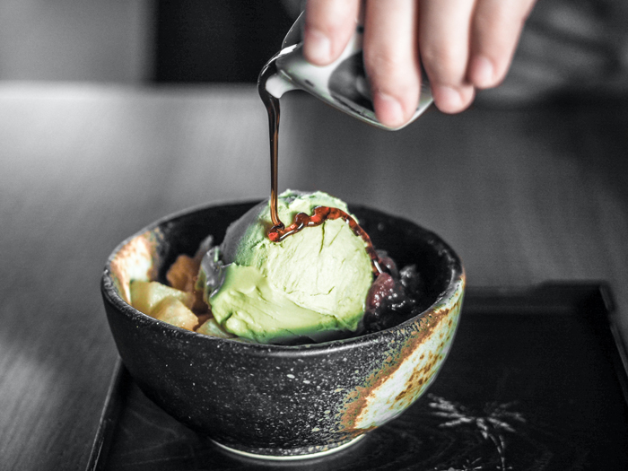
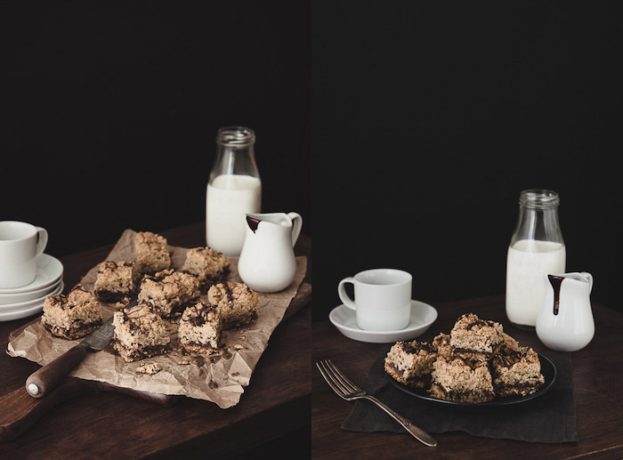
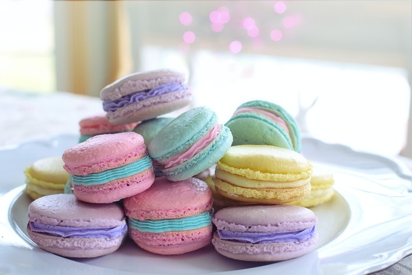
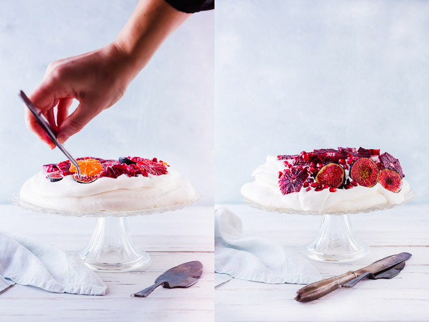
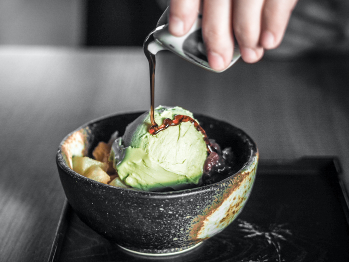
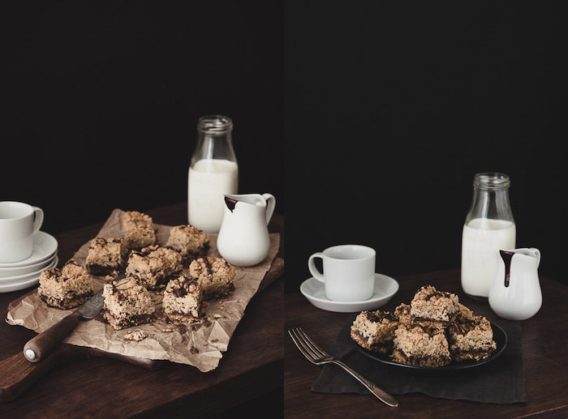
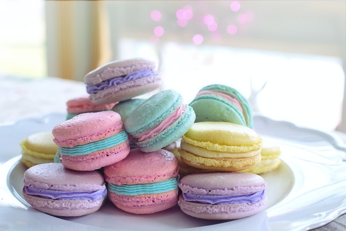
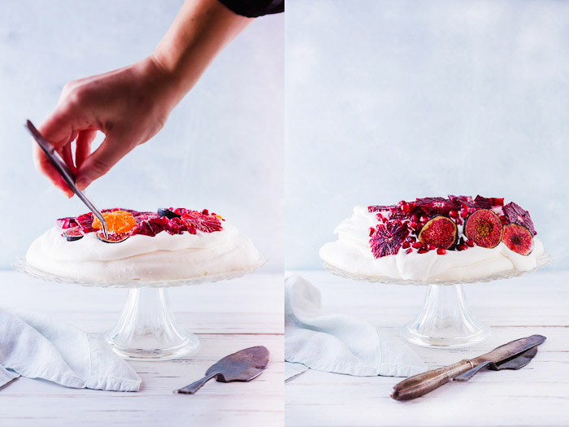
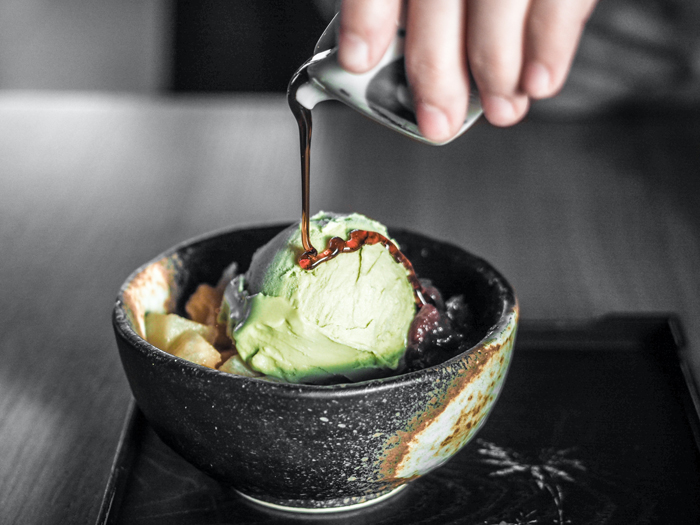
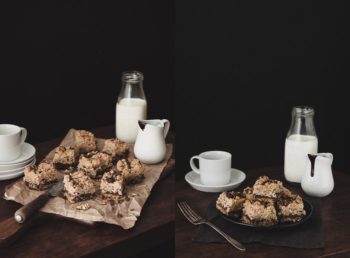
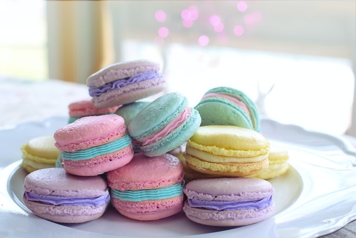
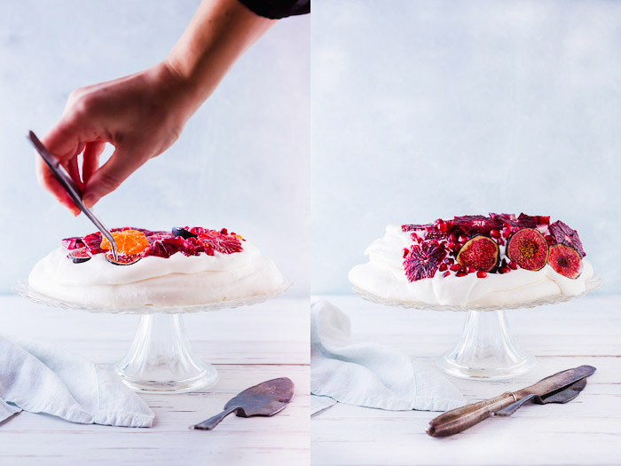
Founded on the 4th of October 2020, Happy Desserts is your place to go! There are many people who will argue that eating a creamy cheesecake or indulging in a decadent chocolate pudding helps lift their mood.
But is there any scientific, biological reasoning behind this feeling of ‘sweet’ satisfaction? Or is it merely just an emotional reaction to enjoying our favourite treats? The Institute of Optimum Nutrition would argue the former, claiming that there a number of foods that improve mood levels by releasing natural, feel-good chemicals called endorphins. According to research produced by the Institute, a number of foods found in desserts – fruits, nuts and chocolate – contain high levels of endorphins, minerals and antioxidants that can help banish the blues.
Here at Happy Dessert, desserts certainly put a smile on your face. Check out our catalogue to see if there’s anything in there that might lift your spirits.